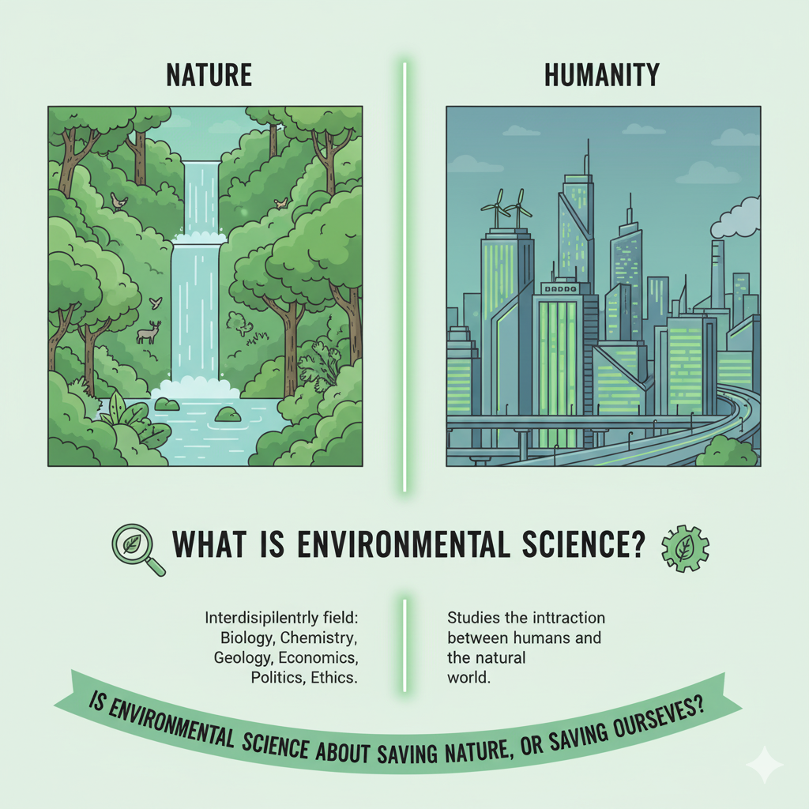
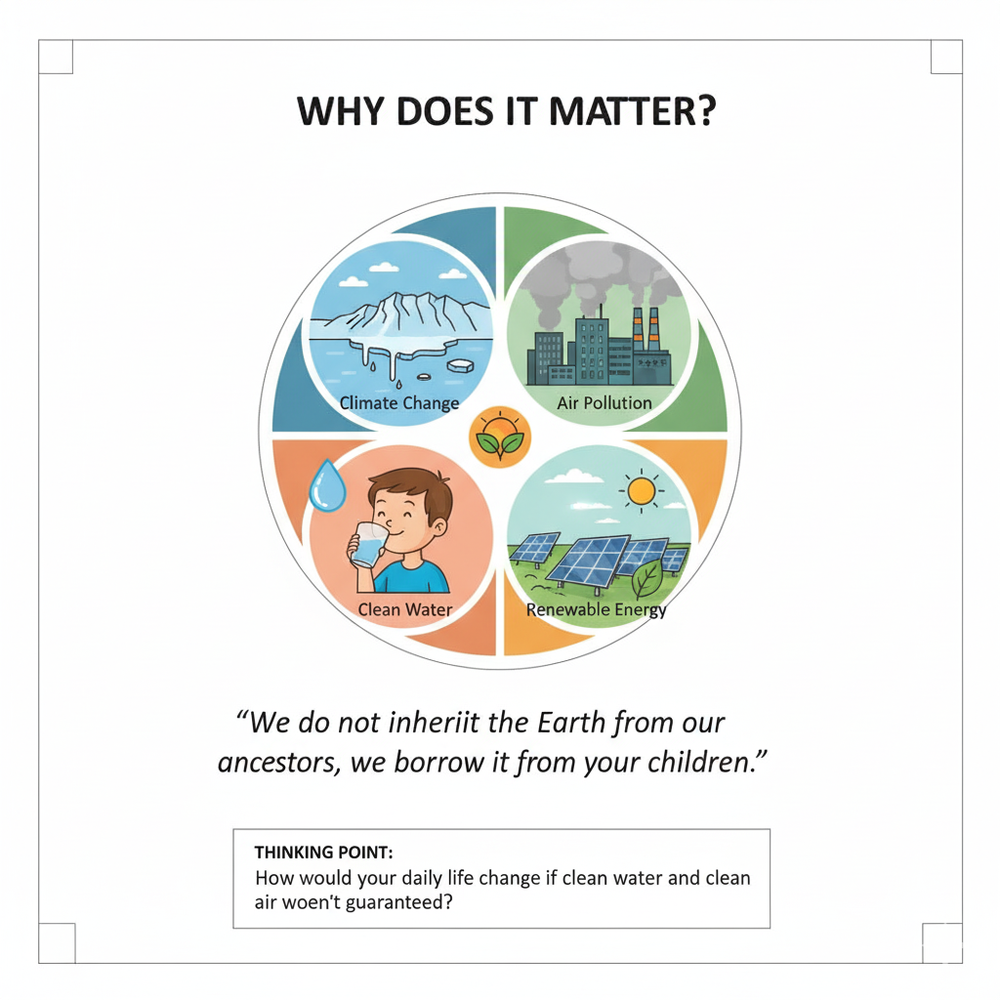
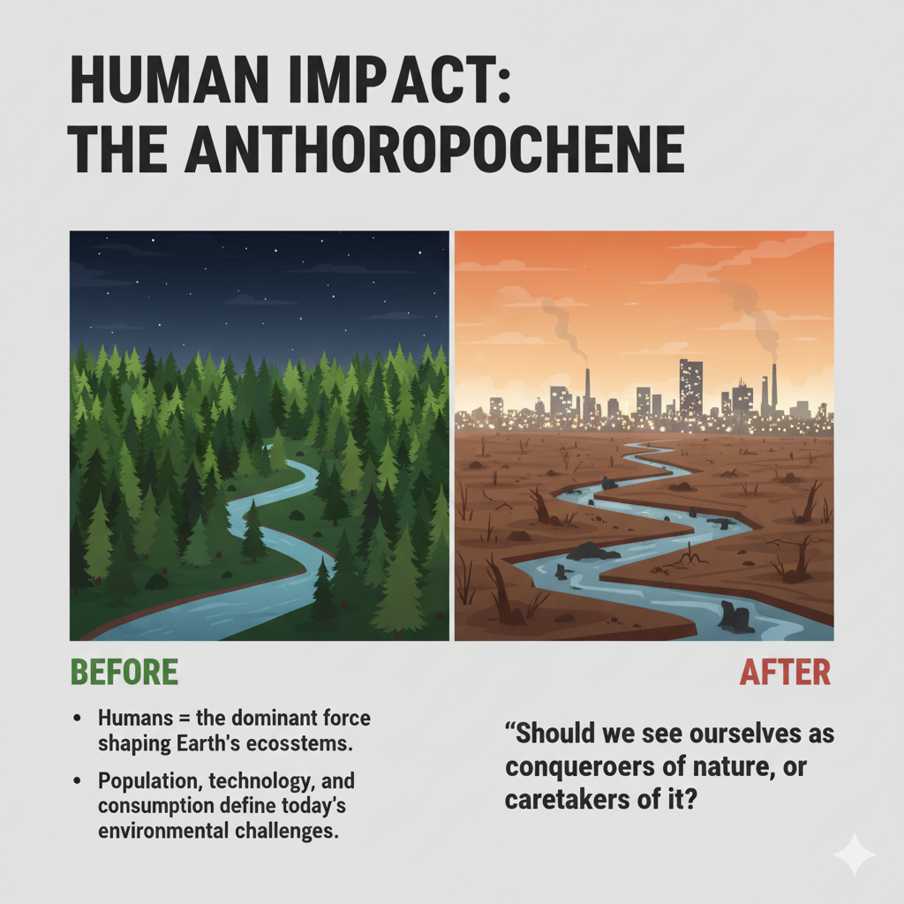
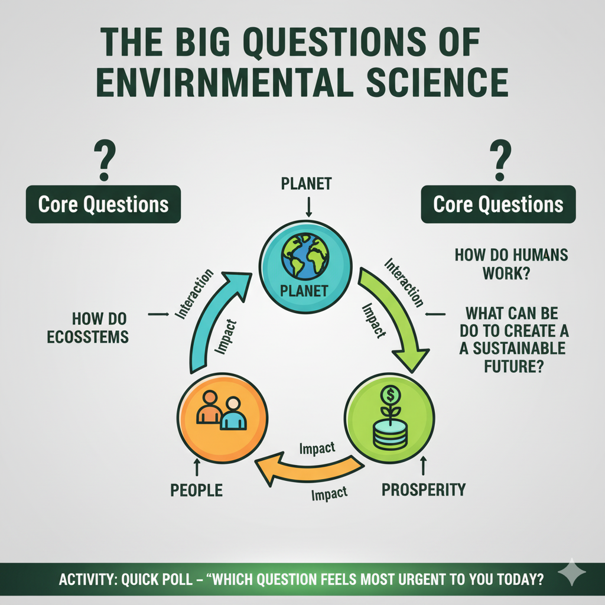
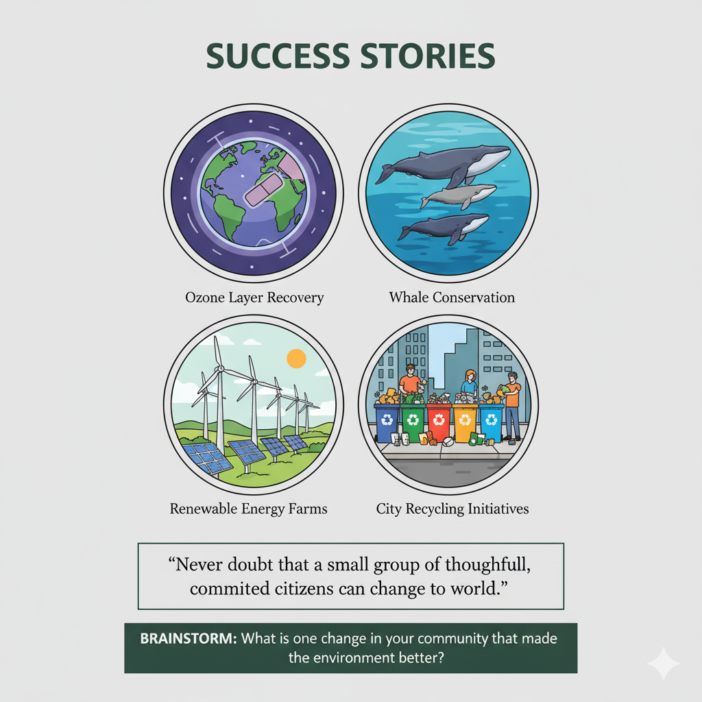
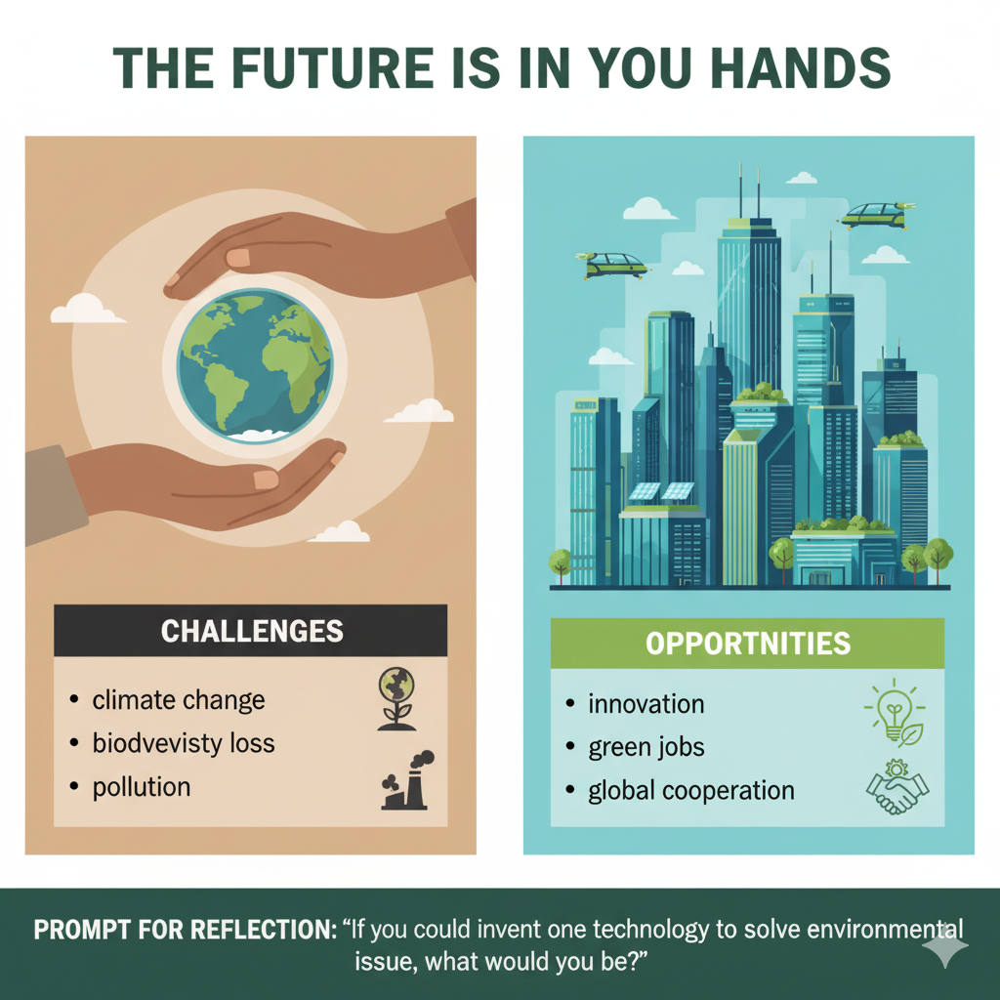
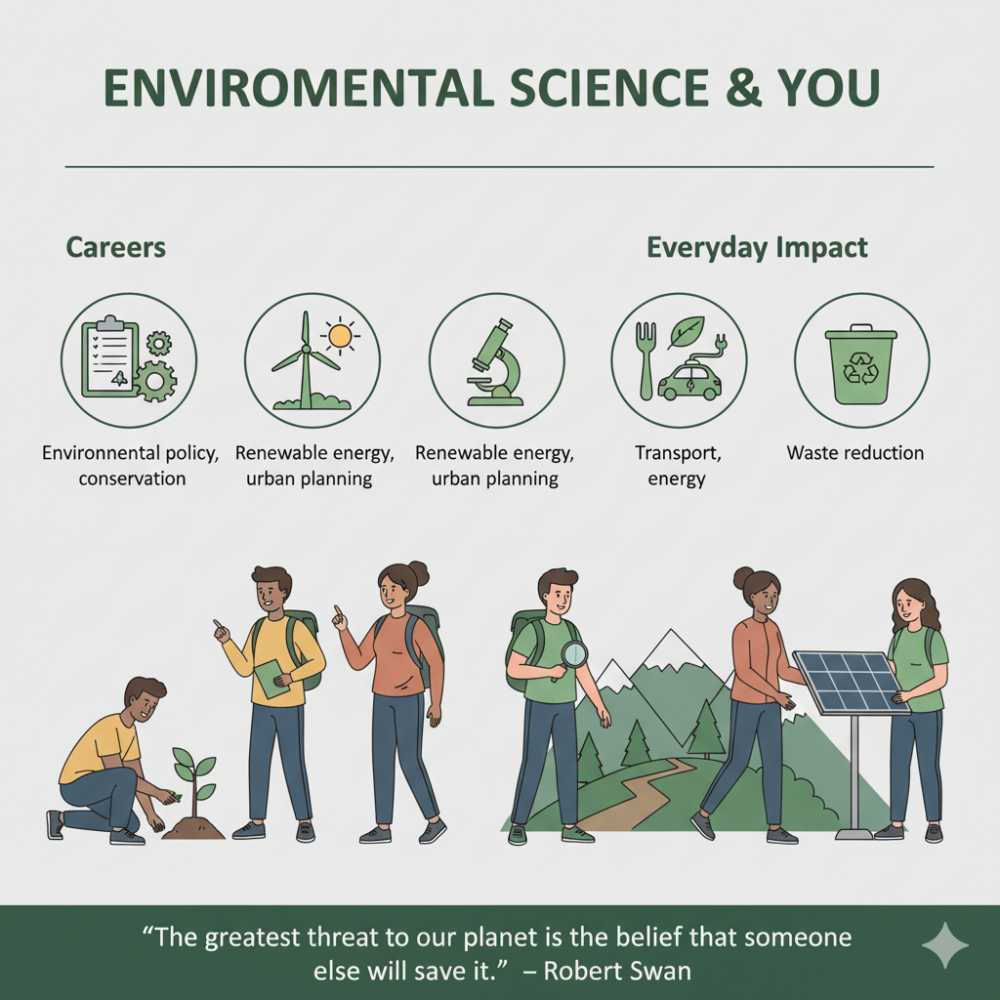
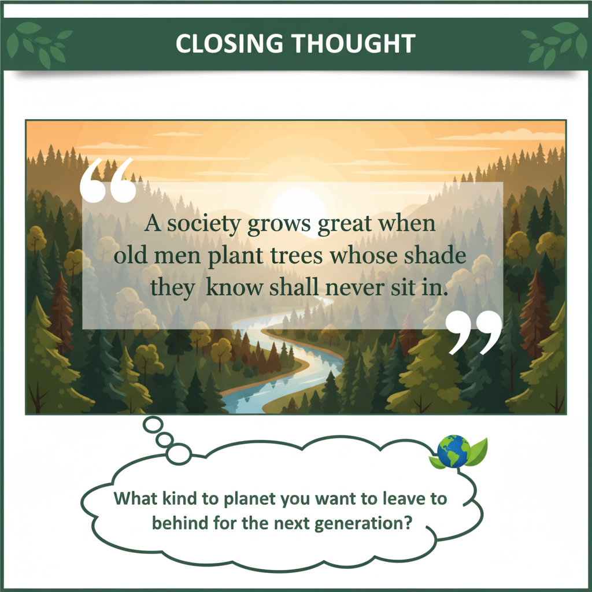
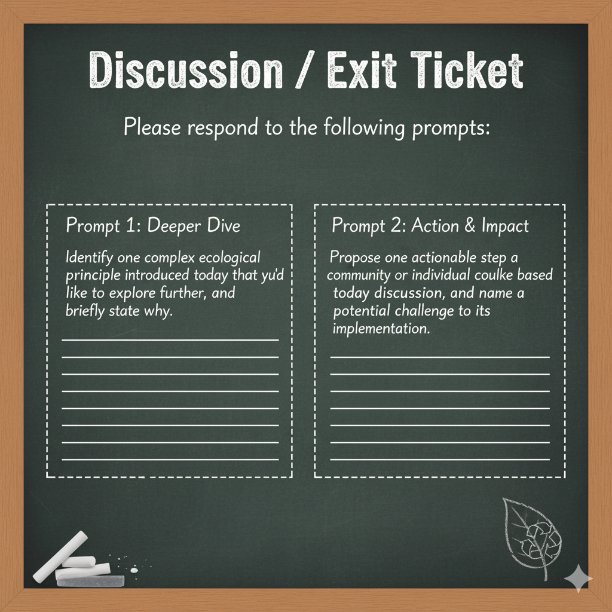

A vivid image contrasts a lush natural landscape with a sustainable futuristic city. The glowing Earth emphasizes our shared responsibility for the planet. "The Earth is what we all have in common." – Wendell Berry.

What is Environmental Science?
A rainforest and modern city illustrate the balance between nature and humanity. Environmental Science studies how humans interact with the natural world. Is it about saving nature, or saving ourselves?

Why Does It Matter?
Key environmental concerns like climate change and air pollution are shown through engaging infographics. Clean water access and renewable energy highlight solutions. "We do not inherit the Earth from our ancestors, we borrow it from our children."

Human Impact: The Anthropocene
A before-and-after comparison shows deforestation and pollution versus a healthy forest. Humans are depicted as the dominant force shaping ecosystems. Should we see ourselves as conquerors of nature or caretakers of it?

The Big Questions of Environmental Science
A circular diagram connects planet, people, and prosperity. Arrows show how each affects the other. Core questions encourage students to reflect and participate in a poll.

Success Stories
Environmental victories like ozone recovery and whale conservation are showcased. Renewable energy farms and city recycling highlight sustainable solutions. "Never doubt that a small group of thoughtful, committed citizens can change the world."

The Future Is in Our Hands
Hands cradle the glowing Earth, listing challenges like climate change and biodiversity loss. A futuristic green city represents opportunities in innovation and global cooperation. Reflection prompts invite students to consider their role.

Environmental Science & You
Icons show environmental careers and everyday actions impacting the planet. Students engage in outdoor and scientific activities. "The greatest threat to our planet is the belief that someone else will save it." – Robert Swan.

Closing Thought
A sunrise over a serene forest and river inspires reflection. The peaceful scene emphasizes natural beauty. Students are asked: "What kind of planet do you want to leave behind for the next generation?"

Discussion / Exit Ticket
A chalkboard-style slide presents two clear prompts. Students explore deeper ecological principles. They also plan actionable steps to create real-world impact.